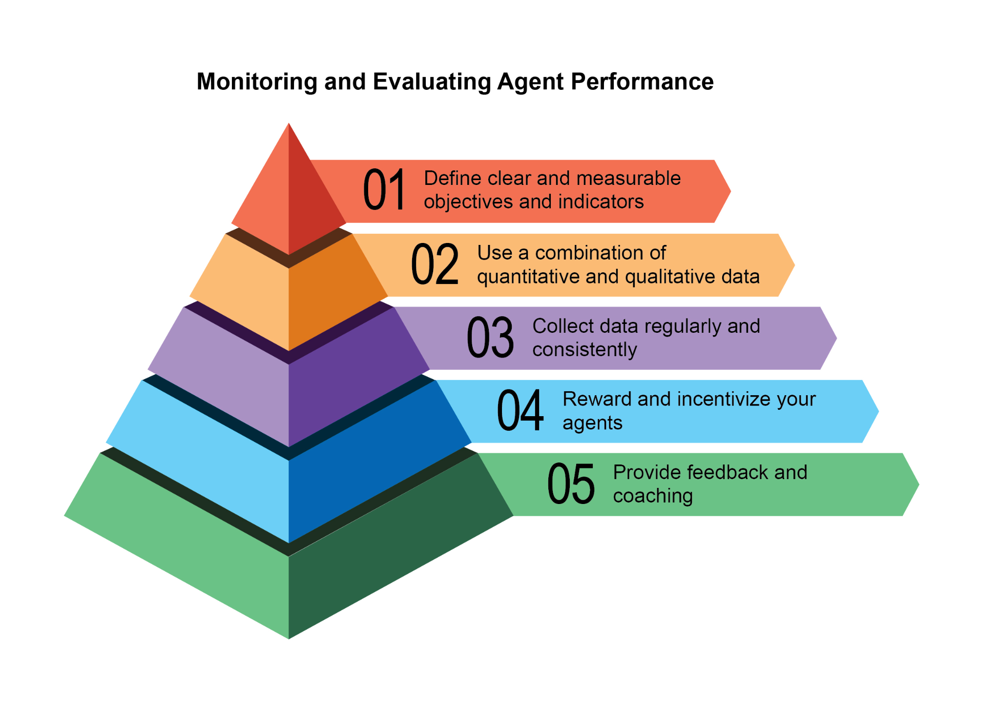
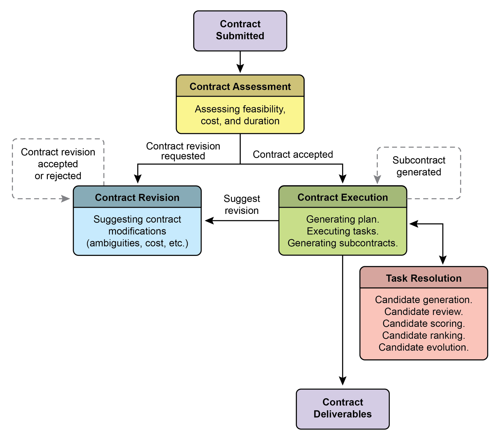
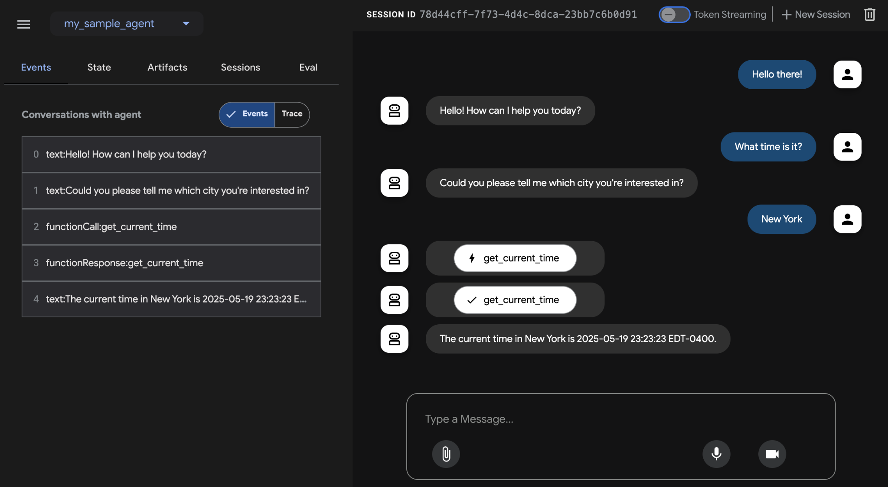
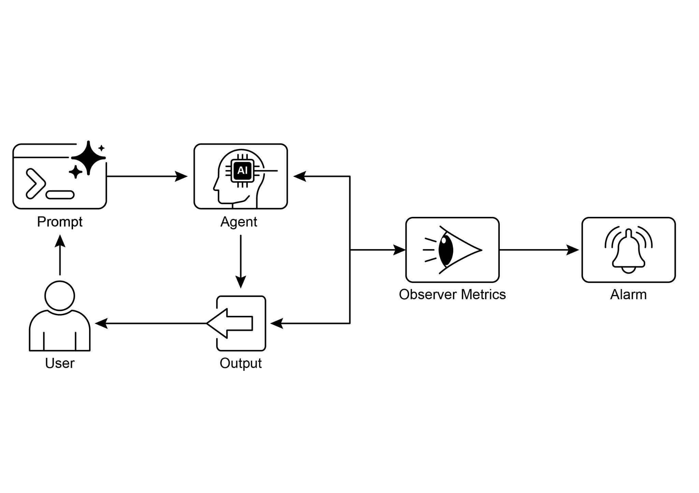

读书 · Agentic Design Patterns · 中英对照
第 19 章 · 评估与监控 Evaluation and Monitoring
Chapter 19: Evaluation and Monitoring · 《Agentic Design Patterns》 · Antonio Gulli · 2025
讲如何系统度量智能体的效果、效率与合规性，并建立反馈闭环持续监控。
← 返回导读 原书 PDF · 第304页起 上一章:第18章 下一章:第20章
本章要点
① 评估需超越精确匹配，用语义相似度、LLM-as-a-Judge等指标 ① 监控延迟与token用量，保障体验并控制成本 ① 评估智能体轨迹与工具调用，而非只看最终输出 ① 多智能体需评估协作质量，并向正式契约式承包商演进
本章一图流
超越精确匹配用语义相似度、LLM评判等指标→监控延迟与Token保障体验并控制成本→评估轨迹与工具关注过程而非只看结果→多智能体协作评估衡量协作质量与契约演进→反馈闭环持续监控并迭代优化
系统度量智能体效果、效率与合规性，建立反馈闭环持续监控。
原书插图




本章划线句
划线句(逐字校验)
"Evaluating agents' trajectories is essential, as traditional software tests are insufficient."
为什么值得划线:点明智能体评估与传统测试的根本差异
划线句(逐字校验)
"This LLM-as-a-Judge approach assesses another AI agent's output based on predefined criteria for "helpfulness.""
为什么值得划线:概括主观质量评估的核心方法
划线句(逐字校验)
"This transformation is supported by four key pillars that collectively ensure clarity, reliability, and robust execution of tasks that were previously beyond the scope of autonomous systems."
为什么值得划线:引出从智能体到承包商的四支柱框架
正文(英中对照)
第19章：评估与监控 Chapter 19: Evaluation and Monitoring
"This chapter examines methodologies that allow intelligent agents to systematically assess their performance, monitor progress toward goals, and detect operational anomalies. While Chapter 11 outlines goal setting and monitoring, and Chapter 17 addresses Reasoning mechanisms, this chapter focuses on the continuous, often external, measurement of an agent's effectiveness, efficiency, and compliance with requirements. This includes defining metrics, establishing feedback loops, and implementing reporting systems to ensure agent performance aligns with expectations in operational environments (see Fig.1) Fig:1."
本章探讨使智能体(Intelligent Agent)能够系统评估自身表现、监控目标进展并检测运行异常的方法论。第11章概述了目标设定与监控，第17章讨论了推理(Reasoning)机制，而本章聚焦于对智能体有效性、效率及需求合规性的持续、通常是外部的测量。这包括定义指标、建立反馈回路以及实施报告系统，以确保智能体在运行环境中的表现符合预期（见图1）。图1。
导读注:本章重点在于外部持续测量智能体表现，而非其内部目标设定或推理。
"Best practices for evaluation and monitoring Practical Applications & Use Cases Most Common Applications and Use Cases: 1 ● Performance Tracking in Live Systems: Continuously monitoring the accuracy, latency, and resource consumption of an agent deployed in a production environment (e.g., a customer service chatbot's resolution rate, response time). ● A/B Testing for Agent Improvements: Systematically comparing the performance of different agent versions or strategies in parallel to identify optimal approaches (e.g., trying two different planning algorithms for a logistics agent). ● Compliance and Safety Audits: Generate automated audit reports that track an agent's compliance with ethical guidelines, regulatory requirements, and safety protocols over time."
评估与监控的最佳实践 实际应用与用例 最常见的应用与用例：1 ● 实时系统中的性能跟踪：持续监控部署在生产环境中的 agent（智能体）的准确性、延迟和资源消耗（例如，客服聊天机器人的解决率、响应时间）。● 用于 agent 改进的 A/B 测试：并行系统地比较不同 agent 版本或策略的性能，以确定最优方法（例如，为物流 agent 尝试两种不同的规划算法）。● 合规与安全审计：生成自动化审计报告，跟踪 agent 在一段时间内对伦理准则、监管要求和安全协议的遵守情况。
导读注:评估与监控的三大落地场景：性能跟踪、A/B 测试与合规审计。
"These reports can be verified by a human-in-the-loop or another agent, and can generate KPIs or trigger alerts upon identifying issues. ● Enterprise systems: To govern Agentic AI in corporate systems, a new control instrument, the AI "Contract," is needed."
这些报告可由 human-in-the-loop（人工介入）或另一个 agent 验证，并可在识别问题时生成 KPI 或触发告警。● 企业系统：要在企业系统中治理 Agentic AI（代理式 AI），需要一种新的控制工具，即 AI "Contract"（契约）。
导读注:提出用 AI Contract 治理企业代理式 AI，并强调报告可验证、可触发告警。
"This dynamic agreement codifies the objectives, rules, and controls for AI-delegated tasks. ● Drift Detection: Monitoring the relevance or accuracy of an agent's outputs over time, detecting when its performance degrades due to changes in input data distribution (concept drift) or environmental shifts. ● Anomaly Detection in Agent Behavior: Identifying unusual or unexpected actions taken by an agent that might indicate an error, a malicious attack, or an emergent un-desired behavior. ● Learning Progress Assessment: For agents designed to learn, tracking their learning curve, improvement in specific skills, or generalization capabilities over different tasks or data sets."
这种动态协议将 AI 委托任务的目标、规则和控制措施编纂成文。漂移检测（Drift Detection）：随时间监控 agent 输出的相关性或准确性，检测其性能何时因输入数据分布变化（概念漂移）或环境变化而下降。Agent 行为异常检测（Anomaly Detection in Agent Behavior）：识别 agent 采取的异常或意外动作，这些动作可能表明错误、恶意攻击或涌现出的非期望行为。学习进度评估（Learning Progress Assessment）：对于为学习而设计的 agent，跟踪其学习曲线、特定技能的提升，或在不同任务或数据集上的泛化能力。
导读注:三类监控机制——漂移、异常、学习进度——构成 AI 委托任务的动态控制闭环。
"Hands-On Code Example Developing a comprehensive evaluation framework for AI agents is a challenging endeavor, comparable to an academic discipline or a substantial publication in its complexity. This difficulty stems from the multitude of factors to consider, such as model performance, user interaction, ethical implications, and broader societal impact. Nevertheless, for practical implementation, the focus can be narrowed to critical use cases essential for the efficient and effective functioning of AI agents. Agent Response Assessment: This core process is essential for evaluating the quality and accuracy of an agent's outputs."
动手代码示例 为 AI 智能体（AI agent）开发一个全面的评估框架是一项具有挑战性的工作，其复杂性堪比一门学科或一份重要的出版物。这种困难源于需要考虑的众多因素，例如模型性能、用户交互、伦理影响以及更广泛的社会影响。然而，对于实际实现而言，可以将关注点缩小到对 AI 智能体高效且有效运行至关重要的关键用例。智能体响应评估（Agent Response Assessment）：这一核心过程对于评估智能体输出的质量和准确性至关重要。
导读注:强调评估框架复杂如学科，但落地需聚焦智能体响应评估这一核心。
"It involves determining if the agent delivers pertinent, correct, logical, unbiased, and accurate information in response to given inputs. Assessment metrics may include factual correctness, fluency, grammatical precision, and adherence to the user's intended purpose. 2"
这涉及判断 agent 在响应给定输入时，是否提供相关、正确、有逻辑、无偏见且准确的信息。评估指标可包括事实正确性、流畅度、语法精确性以及对用户预期目的的遵循。
导读注:关注 agent 输出质量的五维标准与四类评估指标。
python
def evaluate_response_accuracy(agent_output: str, expected_output:
str) -> float:
"""Calculates a simple accuracy score for agent responses."""
# This is a very basic exact match; real-world would use more
sophisticated metrics
return 1.0 if agent_output.strip().lower() ==
expected_output.strip().lower() else 0.0"# Example usage agent_response = "The capital of France is Paris." ground_truth = "Paris is the capital of France." score = evaluate_response_accuracy(agent_response, ground_truth) print(f"Response accuracy: {score}") The Python function `evaluate_response_accuracy` calculates a basic accuracy score for an AI agent's response by performing an exact, case-insensitive comparison between the agent's output and the expected output, after removing leading or trailing whitespace. It returns a score of 1.0 for an exact match and 0.0 otherwise, representing a binary correct or incorrect evaluation. This method, while straightforward for simple checks, does not account for variations like paraphrasing or semantic equivalence."
# 示例用法
agent_response = "The capital of France is Paris."
ground_truth = "Paris is the capital of France."
score = evaluate_response_accuracy(agent_response, ground_truth)
print(f"Response accuracy: {score}")
Python 函数 `evaluate_response_accuracy` 通过去除首尾空白后，对 AI agent 的输出与预期输出进行精确、不区分大小写的比较，从而为 AI agent 的响应计算一个基本的准确率分数。它在完全匹配时返回 1.0 分，否则返回 0.0 分，表示二元正确或错误评估。这种方法虽然对于简单检查很直接，但不考虑改写或语义等价等变体。
导读注:该函数仅做精确匹配，无法识别语义等价，评估能力有限。
"The problem lies in its method of comparison. The function performs a strict, character-for-character comparison of the two strings. In the example provided: ● agent_response: "The capital of France is Paris." ● ground_truth: "Paris is the capital of France." Even after removing whitespace and converting to lowercase, these two strings are not identical. As a result, the function will incorrectly return an accuracy score of 0.0, even though both sentences convey the same meaning. A straightforward comparison falls short in assessing semantic similarity, only succeeding if an agent's response exactly matches the expected output."
问题在于其比较方法。该函数对两个字符串执行严格的逐字符比较。在所提供的示例中：● agent_response：“The capital of France is Paris.” ● ground_truth：“Paris is the capital of France.” 即使去除空白并转换为小写后，这两个字符串也不相同。因此，即使两句话表达相同含义，该函数也会错误地返回 0.0 的准确率分数。简单的比较无法评估语义相似性，只有在 agent 的响应与预期输出完全匹配时才会成功。
导读注:揭示逐字符比较的致命缺陷：语义相同但措辞不同即判 0 分。
"A more effective evaluation necessitates advanced Natural Language Processing (NLP) techniques to discern the meaning between sentences. For thorough AI agent evaluation in real-world scenarios, more sophisticated metrics are often indispensable. These metrics can encompass String Similarity Measures like Levenshtein distance and Jaccard similarity, Keyword Analysis for the presence or absence of specific keywords, Semantic Similarity using cosine similarity with embedding models, LLM-as-a-Judge Evaluations (discussed later for assessing nuanced correctness and helpfulness), and RAG-specific Metrics such as faithfulness 3 and relevance."
更有效的评估需要先进的自然语言处理（Natural Language Processing, NLP）技术来辨别句子之间的含义。为了在真实场景中对 AI agent 进行全面评估，往往离不开更精细的指标。这些指标可以包括：字符串相似度度量（String Similarity Measures），如 Levenshtein 距离和 Jaccard 相似度；关键词分析（Keyword Analysis），用于判断特定关键词是否存在；语义相似度（Semantic Similarity），使用嵌入模型计算余弦相似度；LLM-as-a-Judge 评估（后文讨论，用于评估细微的正确性与有用性）；以及 RAG 专用指标，如 faithfulness 和 relevance。
导读注:评估不止字符串匹配，LLM-as-a-Judge 与 RAG 专用指标才是真实场景的关键。
"Latency Monitoring: Latency Monitoring for Agent Actions is crucial in applications where the speed of an AI agent's response or action is a critical factor. This process measures the duration required for an agent to process requests and generate outputs. Elevated latency can adversely affect user experience and the agent's overall effectiveness, particularly in real-time or interactive environments. In practical applications, simply printing latency data to the console is insufficient. Logging this information to a persistent storage system is recommended."
延迟监控：对 Agent 动作的延迟监控在 AI agent 的响应或动作速度是关键因素的应用中至关重要。该过程测量 agent 处理请求并生成输出所需的时长。延迟升高会对用户体验和 agent 的整体有效性产生不利影响，尤其是在实时或交互式环境中。在实际应用中，仅将延迟数据打印到控制台是不够的。建议将此信息记录到持久化存储系统中。
导读注:强调延迟监控需持久化存储，而非仅打印到控制台。
"Options include structured log files (e.g., JSON), time-series databases (e.g., InfluxDB, Prometheus), data warehouses (e.g., Snowflake, BigQuery, PostgreSQL), or observability platforms (e.g., Datadog, Splunk, Grafana Cloud). Tracking Token Usage for LLM Interactions: For LLM-powered agents, tracking token usage is crucial for managing costs and optimizing resource allocation. Billing for LLM interactions often depends on the number of tokens processed (input and output). Therefore, efficient token usage directly reduces operational expenses."
可选方案包括结构化日志文件（如 JSON）、时序数据库（如 InfluxDB、Prometheus）、数据仓库（如 Snowflake、BigQuery、PostgreSQL）或可观测性平台（如 Datadog、Splunk、Grafana Cloud）。追踪 LLM 交互的 Token 用量：对于由 LLM 驱动的 agent，追踪 token 用量对于管理成本和优化资源分配至关重要。LLM 交互的计费通常取决于处理的 token 数量（输入和输出）。因此，高效的 token 使用可直接降低运营开支。
导读注:点明 token 用量追踪是控制 LLM agent 成本的关键手段。
"Additionally, monitoring token counts helps identify potential areas for improvement in prompt engineering or response generation processes. # This is conceptual as actual token counting depends on the LLM API class LLMInteractionMonitor: def __init__(self): self.total_input_tokens = 0 self.total_output_tokens = 0"
此外，监控 token 数量有助于识别 prompt engineering 或响应生成流程中潜在的改进点。# 这是概念性的，因为实际的 token 计数取决于 LLM API 类 LLMInteractionMonitor：def __init__(self): self.total_input_tokens = 0 self.total_output_tokens = 0
导读注:token 监控可定位 prompt 与生成流程的优化点，示例代码展示计数器的初始化。
python
def record_interaction(self, prompt: str, response: str):
# In a real scenario, use LLM API's token counter or a
tokenizer
input_tokens = len(prompt.split()) # Placeholder
output_tokens = len(response.split()) # Placeholder
self.total_input_tokens += input_tokens
self.total_output_tokens += output_tokens
print(f"Recorded interaction: Input tokens={input_tokens},
Output tokens={output_tokens}")python
def get_total_tokens(self):
return self.total_input_tokens, self.total_output_tokenspython
# Example usage
monitor = LLMInteractionMonitor()
monitor.record_interaction("What is the capital of France?", "The
capital of France is Paris.")python
monitor.record_interaction("Tell me a joke.", "Why don't scientists
trust atoms? Because they make up everything!")
input_t, output_t = monitor.get_total_tokens()
print(f"Total input tokens: {input_t}, Total output tokens:
{output_t}")"This section introduces a conceptual Python class, `LLMInteractionMonitor`, developed to track token usage in large language model interactions. The class incorporates counters for both input and output tokens. Its `record_interaction` method simulates token counting by splitting the prompt and response strings. In a practical implementation, specific LLM API tokenizers would be employed for precise token counts. As interactions occur, the monitor accumulates the total input and output token counts. The `get_total_tokens` method provides access to these cumulative totals, essential for cost management and optimization of LLM usage."
本节介绍一个概念性的 Python 类 `LLMInteractionMonitor`，用于跟踪大型语言模型（LLM）交互中的 token 使用情况。该类包含输入和输出 token 的计数器。其 `record_interaction` 方法通过拆分 prompt 和响应字符串来模拟 token 计数。在实际实现中，会采用特定的 LLM API tokenizer 来获得精确的 token 计数。随着交互的发生，监控器会累计总输入和输出 token 数。`get_total_tokens` 方法提供对这些累计总数的访问，这对于成本管理和优化 LLM 使用至关重要。
导读注:用概念类演示如何累计 token 用量，强调实际需用 API tokenizer 精确计数。
"Custom Metric for "Helpfulness" using LLM-as-a-Judge: Evaluating subjective qualities like an AI agent's "helpfulness" presents challenges beyond standard objective metrics. A potential framework involves using an LLM as an evaluator. This LLM-as-a-Judge approach assesses another AI agent's output based on predefined criteria for "helpfulness." Leveraging the advanced linguistic capabilities of LLMs, this method offers nuanced, human-like evaluations of subjective qualities, surpassing simple keyword matching or rule-based assessments. Though in development, this technique shows promise for automating and scaling qualitative evaluations."
使用 LLM-as-a-Judge 为“有用性”定制指标：评估 AI agent 的“有用性”等主观特质，会带来超出标准客观指标的挑战。一个潜在框架是使用 LLM 作为评估器。这种 LLM-as-a-Judge 方法依据预定义的“有用性”标准来评估另一个 AI agent 的输出。借助 LLM 的高级语言能力，该方法能对主观特质给出细致、类人的评估，超越简单的关键词匹配或基于规则的评估。尽管仍在开发中，这项技术显示出自动化和规模化定性评估的前景。
导读注:介绍用 LLM 当裁判评估主观“有用性”，可超越关键词匹配。
python
import google.generativeai as genai
import os
import json
import logging
from typing import Optional"# --- Configuration -- logging.basicConfig(level=logging.INFO, format='%(asctime)s %(levelname)s - %(message)s')"
# --- 配置 -- logging.basicConfig(level=logging.INFO, format='%(asctime)s %(levelname)s - %(message)s')
导读注:日志配置：设置 INFO 级别与时间戳格式。
python
# Set your API key as an environment variable to run this script
# For example, in your terminal: export
GOOGLE_API_KEY='your_key_here'
try:
genai.configure(api_key=os.environ["GOOGLE_API_KEY"])
except KeyError:
logging.error("Error: GOOGLE_API_KEY environment variable not
set.")"5 exit(1) # --- LLM-as-a-Judge Rubric for Legal Survey Quality --LEGAL_SURVEY_RUBRIC = """ You are an expert legal survey methodologist and a critical legal reviewer. Your task is to evaluate the quality of a given legal survey question. Provide a score from 1 to 5 for overall quality, along with a detailed rationale and specific feedback."
5 exit(1) # --- 用于法律调查质量的 LLM-as-a-Judge 评分标准 --LEGAL_SURVEY_RUBRIC = """ 你是一位专家级法律调查方法学家和严格的法律评审员。你的任务是评估给定法律调查问题的质量。请为整体质量提供 1 到 5 分的评分，并附上详细的理由和具体反馈。
导读注:展示用 LLM 作为评审员评估法律调查问题的评分标准定义。
"Focus on the following criteria: 1. **Clarity & Precision (Score 1-5):** * 1: Extremely vague, highly ambiguous, or confusing. * 3: Moderately clear, but could be more precise. * 5: Perfectly clear, unambiguous, and precise in its legal terminology (if applicable) and intent. 2. **Neutrality & Bias (Score 1-5):** * 1: Highly leading or biased, clearly influencing the respondent towards a specific answer. * 3: Slightly suggestive or could be interpreted as leading. * 5: Completely neutral, objective, and free from any leading language or loaded terms. 3. **Relevance & Focus (Score 1-5):** * 1: Irrelevant to the stated survey topic or out of scope. * 3: Loosely related but could be more focused. * 5: Directly relevant to the survey's objectives and well-focused on a single concept. 4. **Completeness (Score 1-5):** * 1: Omits critical information needed to answer accurately or provides insufficient context. * 3: Mostly complete, but minor details are missing. * 5: Provides all necessary context and information for the respondent to answer thoroughly. 5. **Appropriateness for Audience (Score 1-5):** * 1: Uses jargon inaccessible to the target audience or is overly simplistic for experts. * 3: Generally appropriate, but some terms might be challenging or oversimplified. * 5: Perfectly tailored to the assumed legal knowledge and background of the target survey audience. **Output Format:** 6 Your response MUST be a JSON object with the following keys: * `overall_score`: An integer from 1 to 5 (average of criterion scores, or your holistic judgment). * `rationale`: A concise summary of why this score was given, highlighting major strengths and weaknesses. * `detailed_feedback`: A bullet-point list detailing feedback for each criterion (Clarity, Neutrality, Relevance, Completeness, Audience Appropriateness)."
请关注以下标准：1. **清晰与精确（评分 1-5）：** * 1：极其模糊、高度歧义或令人困惑。 * 3：中等清晰，但可以更精确。 * 5：完全清晰、无歧义，并且在法律术语（如适用）和意图上精确。 2. **中立与偏见（评分 1-5）：** * 1：高度诱导或有偏见，明显影响受访者倾向特定答案。 * 3：略有暗示性或可被解读为诱导。 * 5：完全中立、客观，不含任何诱导性语言或带倾向的措辞。 3. **相关性与聚焦（评分 1-5）：** * 1：与所述调查主题无关或超出范围。 * 3：关联松散，但可以更聚焦。 * 5：与调查目标直接相关，并良好聚焦于单一概念。 4. **完整性（评分 1-5）：** * 1：遗漏准确回答所需的关键信息，或提供的上下文不足。 * 3：基本完整，但缺少次要细节。 * 5：提供受访者全面回答所需的全部上下文和信息。 5. **对受众的适宜性（评分 1-5）：** * 1：使用目标受众无法理解的术语，或对专家而言过于简单。 * 3：总体适宜，但某些术语可能较难或过于简化。 * 5：完全契合目标调查受众假定的法律知识和背景。 **输出格式：** 6 你的响应必须是一个 JSON 对象，包含以下键： * `overall_score`：1 到 5 的整数（各标准得分的平均值，或你的整体判断）。 * `rationale`：简要总结为何给出该分数，突出主要优点和缺点。 * `detailed_feedback`：逐项详细反馈的要点列表（清晰性、中立性、相关性、完整性、受众适宜性）。
导读注:评分标准逐项给出 1-5 分锚点，并规定 JSON 输出格式。
"Suggest specific improvements. * `concerns`: A list of any specific legal, ethical, or methodological concerns. * `recommended_action`: A brief recommendation (e.g., "Revise for neutrality", "Approve as is", "Clarify scope"). """"
提出具体改进建议。* `concerns`：任何具体的法律、伦理或方法学顾虑的列表。* `recommended_action`：简要建议（例如，“Revise for neutrality”、“Approve as is”、“Clarify scope”）。
导读注:这是评审输出字段定义，注意三个字段各司其职，示例动作保留英文。
python
class LLMJudgeForLegalSurvey:
"""A class to evaluate legal survey questions using a generative
AI model."""python
def __init__(self, model_name: str = 'gemini-1.5-flash-latest',
temperature: float = 0.2):
"""
Initializes the LLM Judge."Args: model_name (str): The name of the Gemini model to use. 'gemini-1.5-flash-latest' is recommended for speed and cost. 'gemini-1.5-pro-latest' offers the highest quality. temperature (float): The generation temperature. Lower is better for deterministic evaluation. """ self.model = genai.GenerativeModel(model_name) self.temperature = temperature"
参数：model_name (str)：要使用的 Gemini 模型名称。'gemini-1.5-flash-latest' 推荐用于速度和成本。'gemini-1.5-pro-latest' 提供最高质量。temperature (float)：生成温度。较低的值更适合确定性评估。""" self.model = genai.GenerativeModel(model_name) self.temperature = temperature
导读注:temperature 越低越适合确定性评估，模型选择需权衡速度成本与质量。
python
def _generate_prompt(self, survey_question: str) -> str:
"""Constructs the full prompt for the LLM judge."""
return f"{LEGAL_SURVEY_RUBRIC}\n\n---\n**LEGAL SURVEY QUESTION
TO EVALUATE:**\n{survey_question}\n---""def judge_survey_question(self, survey_question: str) -> Optional[dict]: """ Judges the quality of a single legal survey question using the LLM. 7 Args: survey_question (str): The legal survey question to be evaluated. Returns: Optional[dict]: A dictionary containing the LLM's judgment, or None if an error occurs."
def judge_survey_question(self, survey_question: str) -> Optional[dict]: """ 使用 LLM 评判单个法律调查问题的质量。7 参数：survey_question (str)：待评估的法律调查问题。返回：Optional[dict]：包含 LLM 评判结果的字典，若发生错误则为 None。
导读注:展示用 LLM 评判法律调查问题质量的函数签名与文档字符串。
"""" full_prompt = self._generate_prompt(survey_question) try: logging.info(f"Sending request to '{self.model.model_name}' for judgment...") response = self.model.generate_content( full_prompt, generation_config=genai.types.GenerationConfig( temperature=self.temperature, response_mime_type="application/json" ) ) # Check for content moderation or other reasons for an empty response. if not response.parts: safety_ratings = response.prompt_feedback.safety_ratings logging.error(f"LLM response was empty or blocked. Safety Ratings: {safety_ratings}") return None return json.loads(response.text)"
full_prompt = self._generate_prompt(survey_question)
try:
logging.info(f"Sending request to '{self.model.model_name}' for judgment...")
response = self.model.generate_content(
full_prompt,
generation_config=genai.types.GenerationConfig(
temperature=self.temperature,
response_mime_type="application/json"
)
)
# 检查内容审核或其他导致空响应的原因。
if not response.parts:
safety_ratings = response.prompt_feedback.safety_ratings
logging.error(f"LLM response was empty or blocked. Safety Ratings: {safety_ratings}")
return None
return json.loads(response.text)
导读注:展示调用 LLM 并处理空响应与安全评级的代码片段。
python
except json.JSONDecodeError:
logging.error(f"Failed to decode LLM response as JSON. Raw
response: {response.text}")
return None
except Exception as e:
logging.error(f"An unexpected error occurred during LLM
judgment: {e}")
return Nonepython
# --- Example Usage --if __name__ == "__main__":
judge = LLMJudgeForLegalSurvey()"# --- Good Example -- 8 good_legal_survey_question = """ To what extent do you agree or disagree that current intellectual property laws in Switzerland adequately protect emerging AI-generated content, assuming the content meets the originality criteria established by the Federal Supreme Court? (Select one: Strongly Disagree, Disagree, Neutral, Agree, Strongly Agree) """ print("\n--- Evaluating Good Legal Survey Question ---") judgment_good = judge.judge_survey_question(good_legal_survey_question) if judgment_good: print(json.dumps(judgment_good, indent=2))"
# --- 良好示例 -- 8 good_legal_survey_question = """ 假设内容满足联邦最高法院（Federal Supreme Court）确立的原创性标准，您在多大程度上同意或不同意瑞士现行知识产权法充分保护新兴的 AI 生成内容？（选择一项：非常不同意、不同意、中立、同意、非常同意） """ print("\n--- 评估良好的法律调查问题 ---") judgment_good = judge.judge_survey_question(good_legal_survey_question) if judgment_good: print(json.dumps(judgment_good, indent=2))
导读注:展示良好法律调查问题的示例，并调用评估函数输出判断结果。
python
# --- Biased/Poor Example -- biased_legal_survey_question = """
Don't you agree that overly restrictive data privacy laws like the
FADP are hindering essential technological innovation and economic
growth in Switzerland?
(Select one: Yes, No)
"""
print("\n--- Evaluating Biased Legal Survey Question ---")
judgment_biased =
judge.judge_survey_question(biased_legal_survey_question)
if judgment_biased:
print(json.dumps(judgment_biased, indent=2))python
# --- Ambiguous/Vague Example -- vague_legal_survey_question = """
What are your thoughts on legal tech?
"""
print("\n--- Evaluating Vague Legal Survey Question ---")
judgment_vague =
judge.judge_survey_question(vague_legal_survey_question)
if judgment_vague:
print(json.dumps(judgment_vague, indent=2))"The Python code defines a class LLMJudgeForLegalSurvey designed to evaluate the quality of legal survey questions using a generative AI model. It utilizes the google.generativeai library to interact with Gemini models. The core functionality involves sending a survey question to the model along with a detailed rubric for evaluation. The rubric specifies five criteria for judging survey questions: Clarity & Precision, Neutrality & Bias, Relevance & Focus, Completeness, 9 and Appropriateness for Audience. For each criterion, a score from 1 to 5 is assigned, and a detailed rationale and feedback are required in the output. The code constructs a prompt that includes the rubric and the survey question to be evaluated."
这段 Python 代码定义了一个名为 LLMJudgeForLegalSurvey 的类，旨在使用生成式 AI 模型评估法律调查问题的质量。它利用 google.generativeai 库与 Gemini 模型交互。核心功能包括将调查问题连同详细的评估标准（rubric）一起发送给模型。该标准规定了评判调查问题的五项准则：清晰与精确（Clarity & Precision）、中立与偏见（Neutrality & Bias）、相关与聚焦（Relevance & Focus）、完整性（Completeness）以及对受众的适宜性（Appropriateness for Audience）。对于每项准则，需给出 1 到 5 的评分，并在输出中提供详细的理由和反馈。代码构建了一个包含评估标准和待评估调查问题的 prompt。
导读注:该段展示了用 LLM 作为法律调查问题评审器的五维评分标准，评分与理由并重。
"The judge_survey_question method sends this prompt to the configured Gemini model, requesting a JSON response formatted according to the defined structure. The expected output JSON includes an overall score, a summary rationale, detailed feedback for each criterion, a list of concerns, and a recommended action. The class handles potential errors during the AI model interaction, such as JSON decoding issues or empty responses. The script demonstrates its operation by evaluating examples of legal survey questions, illustrating how the AI assesses quality based on the predefined criteria. Before we conclude, let's examine various evaluation methods, considering their strengths and weaknesses."
judge_survey_question 方法将此 prompt 发送到配置的 Gemini 模型，请求按照定义的结构返回 JSON 格式的响应。预期的输出 JSON 包括总体评分、总结性理由、针对每个标准的详细反馈、关注点列表以及建议的操作。该类处理 AI 模型交互过程中的潜在错误，例如 JSON 解码问题或空响应。该脚本通过评估法律调查问题的示例来演示其操作，说明 AI 如何根据预定义标准评估质量。在结束之前，让我们考察各种评估方法，考虑它们的优点和缺点。
导读注:介绍 judge_survey_question 的 prompt 发送与 JSON 输出结构，并强调错误处理。
"Evaluation Method Strengths Weaknesses Human Evaluation Captures subtle behavior Difficult to scale, expensive, and time-consuming, as it considers subjective human factors. LLM-as-a-Judge Consistent, efficient, and scalable. Intermediate steps may be overlooked. Limited by LLM capabilities. Automated Metrics Scalable, efficient, and Potential limitation in objective capturing complete capabilities. Agents trajectories Evaluating agents' trajectories is essential, as traditional software tests are insufficient. Standard code yields predictable pass/fail results, whereas agents operate probabilistically, necessitating qualitative assessment of both the final output and the agent's trajectory—the sequence of steps taken to reach a solution."
评估方法 优势 劣势 人工评估（Human Evaluation） 能捕捉细微行为 难以规模化、成本高且耗时，因为它需要考虑主观人为因素。LLM-as-a-Judge 一致、高效且可扩展。 可能忽略中间步骤。受限于 LLM 能力。自动化指标（Automated Metrics） 可扩展、高效，且在客观性方面有潜力 在捕捉完整能力方面存在潜在局限。Agent 轨迹（Agents trajectories） 评估 agent 的轨迹至关重要，因为传统软件测试并不充分。标准代码会产生可预测的通过/失败结果，而 agent 以概率方式运行，因此需要对最终输出和 agent 的轨迹——即达到解决方案所采取的步骤序列——进行定性评估。
导读注:对比四类评估方法，强调 agent 轨迹评估因概率性运行而不可或缺。
"Evaluating multi-agent systems is challenging because they are constantly in flux. This 10 requires developing sophisticated metrics that go beyond individual performance to measure the effectiveness of communication and teamwork. Moreover, the environments themselves are not static, demanding that evaluation methods, including test cases, adapt over time. This involves examining the quality of decisions, the reasoning process, and the overall outcome. Implementing automated evaluations is valuable, particularly for development beyond the prototype stage. Analyzing trajectory and tool use includes evaluating the steps an agent employs to achieve a goal, such as tool selection, strategies, and task efficiency."
评估多智能体系统（multi-agent systems）颇具挑战性，因为它们始终处于不断变化之中。这需要开发超越个体性能的精细指标，以衡量沟通与团队协作的有效性。此外，环境本身并非静态，要求评估方法（包括测试用例）随时间自适应调整。这涉及考察决策质量、推理过程以及整体结果。实施自动化评估很有价值，尤其是在原型阶段之后的开发中。分析轨迹与工具使用包括评估智能体为实现目标所采取的步骤，例如工具选择、策略和任务效率。
导读注:点出多智能体评估的动态性与自动化评估在原型后阶段的价值。
"For example, an agent addressing a customer's product query might ideally follow a trajectory involving intent determination, database search tool use, result review, and report generation. The agent's actual actions are compared to this expected, or ground truth, trajectory to identify errors and inefficiencies. Comparison methods include exact match (requiring a perfect match to the ideal sequence), in-order match (correct actions in order, allowing extra steps), any-order match (correct actions in any order, allowing extra steps), precision (measuring the relevance of predicted actions), recall (measuring how many essential actions are captured), and single-tool use (checking for a specific action)."
例如，一个处理客户产品查询的 agent（智能体）理想情况下可能遵循一条包含意图确定、数据库搜索工具使用、结果审查和报告生成的轨迹。将 agent 的实际动作与这一预期的（或称为 ground truth 的）轨迹进行比较，以识别错误和低效之处。比较方法包括精确匹配（要求与理想序列完全匹配）、按序匹配（动作顺序正确，允许额外步骤）、任意顺序匹配（动作顺序不限，允许额外步骤）、精确率（衡量预测动作的相关性）、召回率（衡量捕获了多少关键动作）以及单工具使用（检查是否存在特定动作）。
导读注:介绍评估 agent 轨迹的多种匹配指标，精确率与召回率的区分是关键。
"Metric selection depends on specific agent requirements, with high-stakes scenarios potentially demanding an exact match, while more flexible situations might use an in-order or any-order match. Evaluation of AI agents involves two primary approaches: using test files and using evalset files. Test files, in JSON format, represent single, simple agent-model interactions or sessions and are ideal for unit testing during active development, focusing on rapid execution and simple session complexity. Each test file contains a single session with multiple turns, where a turn is a user-agent interaction including the user’s query, expected tool use trajectory, intermediate agent responses, and final response."
指标选择取决于具体的 agent 需求，高风险场景可能要求精确匹配（exact match），而更灵活的场景可能使用按序匹配（in-order match）或任意顺序匹配（any-order match）。AI agent 的评估涉及两种主要方法：使用测试文件（test files）和使用评估集文件（evalset files）。测试文件采用 JSON 格式，表示单个、简单的 agent-模型交互或会话，非常适合活跃开发期间的单元测试，侧重于快速执行和简单的会话复杂度。每个测试文件包含一个具有多个轮次（turn）的单一会话，其中一轮是用户-agent 交互，包括用户的查询、预期的工具使用轨迹、中间 agent 响应和最终响应。
导读注:测试文件适合开发期单元测试，评估集文件则用于更复杂场景。
"For example, a test file might detail a user request to “Turn off device_2 in the Bedroom,” specifying the agent’s use of a set_device_info tool with parameters like location: Bedroom, device_id: device_2, and status: OFF, and an expected final response of “I have set the device_2 status to off.” Test files can be organized into folders and may include a test_config.json file to define evaluation criteria. Evalset files utilize a dataset called an “evalset” to evaluate interactions, containing multiple potentially lengthy sessions suited for simulating complex, multi-turn conversations and integration tests."
例如，一个测试文件可能详细描述一个用户请求“关闭卧室中的 device_2”，指定 agent 使用 set_device_info 工具，参数包括 location: Bedroom、device_id: device_2 和 status: OFF，并预期最终响应为“我已将 device_2 状态设为关闭”。测试文件可以组织到文件夹中，并可能包含一个 test_config.json 文件来定义评估标准。Evalset 文件利用一个称为“evalset”的数据集来评估交互，包含多个可能很长的会话，适合模拟复杂的多轮对话和集成测试。
导读注:展示测试文件如何用具体参数与预期响应定义 agent 行为，并区分 evalset 的多轮会话评估。
"An evalset file comprises multiple “evals,” each representing a distinct session with one or more “turns” that include user queries, expected tool use, intermediate responses, and a reference final response. An example evalset might include a session where the user first asks “What can you do?” and then says “Roll a 11 10 sided dice twice and then check if 9 is a prime or not,” defining expected roll\_die tool calls and a check_prime tool call, along with the final response summarizing the dice rolls and the prime check. Multi-agents: Evaluating a complex AI system with multiple agents is much like assessing a team project."
一个 evalset 文件包含多个“evals”，每个代表一个独立的会话，会话中有一个或多个“turns”，包含用户查询、预期工具使用、中间响应和参考最终响应。一个示例 evalset 可能包含这样一个会话：用户首先问“你能做什么？”，然后说“掷一个 11 面骰子两次，然后检查 9 是否是质数”，其中定义了预期的 roll\_die 工具调用和 check_prime 工具调用，以及总结骰子掷出结果和质数检查的最终响应。Multi-agents（多智能体）：评估一个具有多个智能体的复杂 AI 系统，很像评估一个团队项目。
导读注:用掷骰子示例说明 evalset 结构，并类比团队项目解释多智能体评估。
"Because there are many steps and handoffs, its complexity is an advantage, allowing you to check the quality of work at each stage. You can examine how well each individual "agent" performs its specific job, but you must also evaluate how the entire system is performing as a whole. To do this, you ask key questions about the team's dynamics, supported by concrete examples: ● Are the agents cooperating effectively? For instance, after a 'Flight-Booking Agent' secures a flight, does it successfully pass the correct dates and destination to the 'Hotel-Booking Agent'? A failure in cooperation could lead to a hotel being booked for the wrong week. ● Did they create a good plan and stick to it?"
由于存在许多步骤和交接环节，其复杂性反而成为一种优势，让你能够在每个阶段检查工作质量。你可以检查每个单独的“agent”执行其特定任务的效果，但你也必须评估整个系统作为一个整体的表现。为此，你要围绕团队协作动态提出关键问题，并以具体例子作为支撑：● 各 agent 是否在有效协作？例如，在“航班预订 Agent”（Flight-Booking Agent）成功订到航班后，它是否成功将正确的日期和目的地传递给“酒店预订 Agent”（Hotel-Booking Agent）？协作失败可能导致酒店被订到错误的周。● 它们是否制定了良好的计划并坚持执行？
导读注:多步骤交接既是复杂度也是质检优势，重点看 agent 间信息传递是否准确。
"Imagine the plan is to first book a flight, then a hotel. If the 'Hotel Agent' tries to book a room before the flight is confirmed, it has deviated from the plan. You also check if an agent gets stuck, for example, endlessly searching for a "perfect" rental car and never moving on to the next step. ● Is the right agent being chosen for the right task? If a user asks about the weather for their trip, the system should use a specialized 'Weather Agent' that provides live data. If it instead uses a 'General Knowledge Agent' that gives a generic answer like "it's usually warm in summer," it has chosen the wrong tool for the job. ● Finally, does adding more agents improve performance?"
设想计划是先预订航班，再预订酒店。如果“酒店智能体”（Hotel Agent）在航班确认之前就试图订房，它就偏离了计划。你还要检查某个智能体是否卡住了，例如无休止地寻找一辆“完美”的租车，却始终不进入下一步。● 是否为正确的任务选择了正确的智能体？如果用户询问其行程的天气，系统应使用提供实时数据的专门“天气智能体”（Weather Agent）。如果它反而使用“通用知识智能体”（General Knowledge Agent），给出“夏天通常很暖和”这类泛泛的回答，那就是为任务选错了工具。● 最后，增加更多智能体是否能提升性能？
导读注:用订票顺序与天气查询两例说明：多智能体系统要检查计划偏离、卡死与选错智能体。
"If you add a new 'Restaurant-Reservation Agent' to the team, does it make the overall trip-planning better and more efficient? Or does it create conflicts and slow the system down, indicating a problem with scalability?. From Agents to Advanced Contractors Recently, it has been proposed (Agent Companion, gulli et al.) an evolution from simple AI agents to advanced "contractors", moving from probabilistic, often unreliable systems to more deterministic and accountable ones designed for complex, high-stakes environments (see Fig.2). 12 Today's common AI agents operate on brief, underspecified instructions, which makes them suitable for simple demonstrations but brittle in production, where ambiguity leads to failure."
如果你向团队中添加一个新的“餐厅预订代理”（Restaurant-Reservation Agent），它会让整体旅行规划变得更好、更高效吗？还是会制造冲突并拖慢系统，从而表明存在可扩展性问题？从代理到高级承包商 最近有人提出（Agent Companion，gulli 等人），从简单的 AI 代理向高级“承包商”（contractors）演进，即从概率性、往往不可靠的系统转向更具确定性、可问责的系统，专为复杂、高风险环境而设计（见图2）。12 当今常见的 AI 代理基于简短、未充分指定的指令运行，这使它们适合简单演示，但在生产中很脆弱，因为歧义会导致失败。
导读注:新增代理未必提升效率，可扩展性与指令歧义才是关键风险。
"The "contractor" model addresses this by establishing a rigorous, formalized relationship between the user and the AI, built upon a foundation of clearly defined and mutually agreed-upon terms, much like a legal service agreement in the human world. This transformation is supported by four key pillars that collectively ensure clarity, reliability, and robust execution of tasks that were previously beyond the scope of autonomous systems. First is the pillar of the Formalized Contract, a detailed specification that serves as the single source of truth for a task. It goes far beyond a simple prompt."
“承包商”（contractor）模型通过在用户与 AI 之间建立一种严谨、正式化的关系来应对这一问题，这种关系建立在明确界定且双方共同商定的条款基础之上，很像人类世界中的法律服务协议。这一转变由四大关键支柱支撑，它们共同确保清晰性、可靠性，以及对以往超出自主系统能力范围的任务的稳健执行。首先是正式化契约（Formalized Contract）这一支柱，它是一份详细规范，作为任务的唯一事实来源。它远远超出了简单的 prompt。
导读注:用“承包商”类比法律服务协议，把 prompt 升级为正式化契约。
"For example, a contract for a financial analysis task wouldn't just say "analyze last quarter's sales"; it would demand "a 20-page PDF report analyzing European market sales from Q1 2025, including five specific data visualizations, a comparative analysis against Q1 2024, and a risk assessment based on the included dataset of supply chain disruptions." This contract explicitly defines the required deliverables, their precise specifications, the acceptable data sources, the scope of work, and even the expected computational cost and completion time, making the outcome objectively verifiable. Second is the pillar of a Dynamic Lifecycle of Negotiation and Feedback. The contract is not a static command but the start of a dialogue."
例如，一个财务分析任务的契约不会只说“分析上季度的销售”；它会要求“一份20页的PDF报告，分析2025年第一季度欧洲市场销售，包括五个具体的数据可视化、与2024年第一季度的对比分析，以及基于所附供应链中断数据集的风险评估”。该契约明确规定了所需交付物、其精确规格、可接受的数据源、工作范围，甚至预期的计算成本和完成时间，使结果可客观验证。第二是动态协商与反馈生命周期（Dynamic Lifecycle of Negotiation and Feedback）这一支柱。契约不是静态命令，而是对话的开始。
导读注:用具体契约示例说明可验证交付物如何让任务结果客观可查。
"The contractor agent can analyze the initial terms and negotiate. For instance, if a contract demands the use of a specific proprietary data source the agent cannot access, it can return feedback stating, "The specified XYZ database is inaccessible. Please provide credentials or approve the use of an alternative public database, which may slightly alter the data's granularity." This negotiation phase, which also allows the agent to flag ambiguities or potential risks, resolves misunderstandings before execution begins, preventing costly failures and ensuring the final output aligns perfectly with the user's actual intent. 13 Fig. 2: Contract execution example among agents The third pillar is Quality-Focused Iterative Execution."
承包方 agent（智能体）可以分析初始条款并进行协商。例如，如果合同要求使用 agent 无法访问的特定专有数据源，它可以返回反馈称："指定的 XYZ 数据库无法访问。请提供凭据或批准使用替代的公共数据库，这可能会略微改变数据的粒度。"这一协商阶段还允许 agent 标记歧义或潜在风险，从而在执行开始前解决误解，防止代价高昂的失败，并确保最终输出与用户的实际意图完全一致。13 图 2：agent 之间的合同执行示例。第三大支柱是以质量为中心的迭代执行（Quality-Focused Iterative Execution）。
导读注:协商阶段能在执行前消除误解，避免代价高昂的失败。
"Unlike agents designed for low-latency responses, a contractor prioritizes correctness and quality. It operates on a principle of self-validation and correction. For a code generation contract, for example, the agent would not just write the code; it would generate multiple algorithmic approaches, compile and run them against a suite of unit tests defined within the contract, score each solution on metrics like performance, security, and readability, and only submit the version that passes all validation criteria."
与专为低延迟响应设计的 agent 不同，contractor 优先考虑正确性和质量。它遵循自我验证与纠正的原则。例如，对于代码生成合约，agent 不仅会编写代码；它还会生成多种算法方案，针对合约内定义的一套单元测试编译并运行它们，根据性能、安全性和可读性等指标为每个解决方案评分，并且只提交通过所有验证标准的版本。
导读注:contractor 以正确性优先，通过多方案生成与单元测试自验证，只提交全达标版本。
"This internal loop of generating, reviewing, and improving its own work until the contract's specifications are met is crucial for building trust in its outputs. 14 Finally, the fourth pillar is Hierarchical Decomposition via Subcontracts. For tasks of significant complexity, a primary contractor agent can act as a project manager, breaking the main goal into smaller, more manageable sub-tasks."
这种生成、审查并改进自身工作直到满足合同规格的内部循环，对于建立对其输出的信任至关重要。14 最后，第四个支柱是通过分包合同实现的层次化分解（Hierarchical Decomposition via Subcontracts）。对于复杂度较高的任务，主承包商 agent 可以充当项目经理，将主要目标分解为更小、更易管理的子任务。
导读注:强调内部自省循环与层次化分解是建立信任与处理复杂任务的关键。
"It achieves this by generating new, formal "subcontracts." For example, a master contract to "build an e-commerce mobile application" could be decomposed by the primary agent into subcontracts for "designing the UI/UX," "developing the user authentication module," "creating the product database schema," and "integrating a payment gateway." Each of these subcontracts is a complete, independent contract with its own deliverables and specifications, which could be assigned to other specialized agents. This structured decomposition allows the system to tackle immense, multifaceted projects in a highly organized and scalable manner, marking the transition of AI from a simple tool to a truly autonomous and reliable problem-solving engine."
它通过生成新的、正式的“子合同”（subcontracts）来实现这一点。例如，一份“构建电子商务移动应用”的主合同，可由主智能体（primary agent）分解为“设计 UI/UX”“开发用户认证模块”“创建产品数据库模式”和“集成支付网关”等子合同。每份子合同都是一份完整、独立的合同，拥有各自的交付物和规格说明，可分配给其他专业智能体。这种结构化分解使系统能够以高度有序且可扩展的方式处理庞大而多面的项目，标志着 AI 从简单工具向真正自主且可靠的问题解决引擎的转变。
导读注:合同式任务分解让 AI 从工具变为自主问题解决引擎。
"Ultimately, this contractor framework reimagines AI interaction by embedding principles of formal specification, negotiation, and verifiable execution directly into the agent's core logic. This methodical approach elevates artificial intelligence from a promising but often unpredictable assistant into a dependable system capable of autonomously managing complex projects with auditable precision. By solving the critical challenges of ambiguity and reliability, this model paves the way for deploying AI in mission-critical domains where trust and accountability are paramount. Google's ADK Before concluding, let's look at a concrete example of a framework that supports evaluation."
最终，这个承包商框架（contractor framework）通过将形式化规范（formal specification）、协商（negotiation）和可验证执行（verifiable execution）的原则直接嵌入智能体的核心逻辑，重新构想了 AI 交互。这种有条不紊的方法将人工智能从一个有前景但往往不可预测的助手，提升为一个可靠的系统，能够以可审计的精确性自主管理复杂项目。通过解决模糊性和可靠性这两个关键挑战，该模型为在信任和问责至关重要的任务关键型领域部署 AI 铺平了道路。Google 的 ADK 在结束之前，让我们看一个支持评估的框架的具体示例。
导读注:承包商框架将形式化规范与可验证执行嵌入智能体，使 AI 可审计地自主管理复杂项目。
"Agent evaluation with Google's ADK (see Fig.3) can be conducted via three methods: web-based UI (adk web) for interactive evaluation and dataset generation, programmatic integration using pytest for incorporation into testing pipelines, and direct command-line interface (adk eval) for automated evaluations suitable for regular build generation and verification processes. 15 Fig.3: Evaluation Support for Google ADK The web-based UI enables interactive session creation and saving into existing or new eval sets, displaying evaluation status. Pytest integration allows running test files as part of integration tests by calling AgentEvaluator.evaluate, specifying the agent module and test file path."
使用 Google 的 ADK 进行 Agent 评估(见图3)可通过三种方法进行:基于 Web 的 UI(adk web),用于交互式评估和数据集生成;使用 pytest 的编程式集成,用于纳入测试流水线;以及直接命令行界面(adk eval),用于自动化评估,适合常规构建生成与验证流程。15 图3:Google ADK 的评估支持。基于 Web 的 UI 支持交互式会话创建并保存到现有或新的评估集,同时显示评估状态。Pytest 集成允许通过调用 AgentEvaluator.evaluate 将测试文件作为集成测试的一部分运行,需指定 agent 模块和测试文件路径。
导读注:介绍 ADK 三种评估方式,pytest 集成最便于接入 CI 流水线。
"The command-line interface facilitates automated evaluation by providing the agent module path and eval set file, with options to specify a configuration file or print detailed results. Specific evals within a larger eval set can be selected for execution by listing them after the eval set filename, separated by commas. At a Glance What: Agentic systems and LLMs operate in complex, dynamic environments where their performance can degrade over time. Their probabilistic and non-deterministic nature means that traditional software testing is insufficient for ensuring reliability."
命令行界面通过提供 agent 模块路径和 eval 集文件来促进自动化评估，并可选指定配置文件或打印详细结果。通过在以 eval 集文件名之后列出具体 eval（以逗号分隔），可以选择执行较大 eval 集中的特定 eval。概览 是什么：Agentic 系统和 LLM 在复杂、动态的环境中运行，其性能可能随时间下降。它们具有概率性和非确定性本质，这意味着传统软件测试不足以确保可靠性。
导读注:点出 agentic 系统与 LLM 的非确定性使传统测试失效，需专门评估。
"Evaluating dynamic multi-agent systems is a significant challenge because their constantly changing nature and that of their environments demand the development of adaptive testing methods and sophisticated metrics that can measure collaborative success beyond individual performance. Problems like data drift, unexpected interactions, tool calling, and deviations from intended goals can arise after 16 deployment. Continuous assessment is therefore necessary to measure an agent's effectiveness, efficiency, and adherence to operational and safety requirements. Why: A standardized evaluation and monitoring framework provides a systematic way to assess and ensure the ongoing performance of intelligent agents."
评估动态多智能体系统（dynamic multi-agent systems）是一项重大挑战，因为其自身及其环境不断变化的特性，要求开发自适应测试方法（adaptive testing methods）和能够衡量超越个体绩效的协作成功的精细指标（sophisticated metrics）。数据漂移（data drift）、意外交互、工具调用（tool calling）以及偏离预期目标等问题可能在部署后出现。因此，持续评估是必要的，以衡量智能体的有效性、效率以及对运营和安全要求的遵守情况。为什么：标准化的评估与监控框架提供了一种系统化的方式来评估并确保智能体的持续性能。
导读注:点出动态多智能体系统评估的核心难点：持续评估与标准化监控框架不可或缺。
"This involves defining clear metrics for accuracy, latency, and resource consumption, like token usage for LLMs. It also includes advanced techniques such as analyzing agentic trajectories to understand the reasoning process and employing an LLM-as-a-Judge for nuanced, qualitative assessments. By establishing feedback loops and reporting systems, this framework allows for continuous improvement, A/B testing, and the detection of anomalies or performance drift, ensuring the agent remains aligned with its objectives. Rule of thumb: Use this pattern when deploying agents in live, production environments where real-time performance and reliability are critical."
这涉及为准确性、延迟和资源消耗（如 LLM 的 token 使用量）定义清晰的指标。它还包括分析 agentic trajectories 以理解推理过程、采用 LLM-as-a-Judge 进行细致的定性评估等高级技术。通过建立反馈循环和报告系统，该框架支持持续改进、A/B 测试以及异常或性能漂移的检测，确保 agent 始终与其目标保持一致。经验法则：在生产环境中部署 agent、实时性能与可靠性至关重要时，使用此模式。
导读注:强调生产环境监控 agent 需定义指标、建反馈闭环，并给出选用该模式的经验法则。
"Additionally, use it when needing to systematically compare different versions of an agent or its underlying models to drive improvements, and when operating in regulated or high-stakes domains requiring compliance, safety, and ethical audits. This pattern is also suitable when an agent's performance may degrade over time due to changes in data or the environment (drift), or when evaluating complex agentic behavior, including the sequence of actions (trajectory) and the quality of subjective outputs like helpfulness. Visual summary Fig.4: Evaluation and Monitoring design pattern 17"
此外，当需要系统性地比较 agent 或其底层模型的不同版本以推动改进时，以及在需要合规、安全和伦理审计的受监管或高风险领域中运营时，也应使用它。当 agent 的性能可能因数据或环境变化（漂移）而随时间下降时，或当评估复杂的 agentic 行为（包括动作序列（trajectory）和有用性等主观输出的质量）时，这种模式也适用。可视化摘要 图4：评估与监控设计模式 17
导读注:点明该模式适用于版本对比、合规审计、性能漂移与复杂行为评估等场景。
关键要点 Key Takeaways
"● Evaluating intelligent agents goes beyond traditional tests to continuously measure their effectiveness, efficiency, and adherence to requirements in real-world environments. ● Practical applications of agent evaluation include performance tracking in live systems, A/B testing for improvements, compliance audits, and detecting drift or anomalies in behavior. ● Basic agent evaluation involves assessing response accuracy, while real-world scenarios demand more sophisticated metrics like latency monitoring and token usage tracking for LLM-powered agents. ● Agent trajectories, the sequence of steps an agent takes, are crucial for evaluation, comparing actual actions against an ideal, ground-truth path to identify errors and inefficiencies. ● The ADK provides structured evaluation methods through individual test files for unit testing and comprehensive evalset files for integration testing, both defining expected agent behavior. ● Agent evaluations can be executed via a web-based UI for interactive testing, programmatically with pytest for CI/CD integration, or through a command-line interface for automated workflows. ● In order to make AI reliable for complex, high-stakes tasks, we must move from simple prompts to formal "contracts" that precisely define verifiable deliverables and scope."
● 评估智能体（intelligent agent）超越了传统测试，需要在真实环境中持续衡量其有效性、效率以及对需求的遵循程度。● 智能体评估的实际应用包括在实时系统中进行性能跟踪、为改进而进行 A/B 测试、合规审计，以及检测行为中的漂移或异常。● 基础的智能体评估涉及评估响应准确性，而真实场景则需要更精细的指标，例如对 LLM 驱动的智能体进行延迟监控和 token 使用量跟踪。● 智能体轨迹（agent trajectory），即智能体所采取的步骤序列，对评估至关重要，它将实际动作与理想的、真实基准路径进行比较，以识别错误和低效之处。● ADK 通过用于单元测试的单个测试文件和用于集成测试的综合 evalset 文件提供结构化评估方法，两者都定义了预期的智能体行为。● 智能体评估可以通过基于 Web 的 UI 进行交互式测试、使用 pytest 以编程方式集成到 CI/CD 中，或通过命令行界面用于自动化工作流来执行。● 为了使 AI 在复杂、高风险任务中可靠，我们必须从简单的 prompt 转向正式的“契约”（contract），以精确界定可验证的交付物和范围。
导读注:评估智能体需超越传统测试，关注轨迹与真实基准对比，并强调从 prompt 转向正式契约。
"This structured agreement allows the Agents to negotiate, clarify ambiguities, and iteratively validate its own work, transforming it from an unpredictable tool into an accountable and trustworthy system. Conclusions In conclusion, effectively evaluating AI agents requires moving beyond simple accuracy checks to a continuous, multi-faceted assessment of their performance in dynamic environments. This involves practical monitoring of metrics like latency and resource consumption, as well as sophisticated analysis of an agent's decision-making process through its trajectory."
这种结构化协议使 Agent 能够协商、澄清歧义，并迭代验证自身工作，从而将其从不可预测的工具转变为可问责且值得信赖的系统。结论 总之，有效评估 AI agent 需要超越简单的准确率检查，转向在动态环境中对其性能进行持续、多方面的评估。这涉及对延迟和资源消耗等指标进行实际监控，以及通过 agent 的轨迹对其决策过程进行深入分析。
导读注:强调评估 AI agent 要从准确率转向持续、多方面的动态评估。
"For nuanced qualities like helpfulness, innovative methods such as the LLM-as-a-Judge are becoming essential, while frameworks like Google's ADK provide structured tools for both unit and integration testing. The challenge intensifies with multi-agent systems, where the focus shifts to evaluating collaborative success and effective cooperation. 18 To ensure reliability in critical applications, the paradigm is shifting from simple, prompt-driven agents to advanced "contractors" bound by formal agreements. These contractor agents operate on explicit, verifiable terms, allowing them to negotiate, decompose tasks, and self-validate their work to meet rigorous quality standards."
对于有用性等细微特质，LLM-as-a-Judge 等创新方法正变得不可或缺，而 Google 的 ADK 等框架则为单元测试和集成测试提供了结构化工具。多智能体系统使挑战加剧，此时重点转向评估协作成功与有效合作。18 为确保关键应用中的可靠性，范式正从简单的、prompt 驱动的智能体转向受正式协议约束的高级"承包商"(contractor)。这些承包商智能体依据明确、可验证的条款运作，使其能够协商、分解任务并自我验证工作，以满足严格的质量标准。
导读注:智能体测试从单元走向协作评估，契约化承包商智能体成为可靠性新范式。
"This structured approach transforms agents from unpredictable tools into accountable systems capable of handling complex, high-stakes tasks. Ultimately, this evolution is crucial for building the trust required to deploy sophisticated agentic AI in mission-critical domains. References Relevant research includes: 1. ADK Web: https://github.com/google/adk-web 2. ADK Evaluate: https://google.github.io/adk-docs/evaluate/ 3. Survey on Evaluation of LLM-based Agents, https://arxiv.org/abs/2503.16416 4. Agent-as-a-Judge: Evaluate Agents with Agents, https://arxiv.org/abs/2410.10934 5. Agent Companion, gulli et al: https://www.kaggle.com/whitepaper-agent-companion 19"
这种结构化方法将智能体（agent）从不可预测的工具转变为可问责的系统，使其能够处理复杂、高风险的任务。最终，这一演进对于建立信任至关重要，而信任是在关键任务领域部署复杂智能体 AI（agentic AI）所必需的。参考文献 相关研究包括：1. ADK Web：https://github.com/google/adk-web 2. ADK Evaluate：https://google.github.io/adk-docs/evaluate/ 3. Survey on Evaluation of LLM-based Agents，https://arxiv.org/abs/2503.16416 4. Agent-as-a-Judge: Evaluate Agents with Agents，https://arxiv.org/abs/2410.10934 5. Agent Companion, gulli et al：https://www.kaggle.com/whitepaper-agent-companion 19
导读注:点出结构化方法让智能体可问责，是高风险领域部署的关键。
来源与用途
《Agentic Design Patterns》,Antonio Gulli · 2025 · 原书 PDF。本页为学习用途的对照整理,版权归原作者;有问题到读书导师处提问,答案只引用书中原文并标注章节。
← 第18章 · 护栏/安全模式 Guardrails/Safety Patterns 导读 第20章 · 优先级排序 Prioritization →